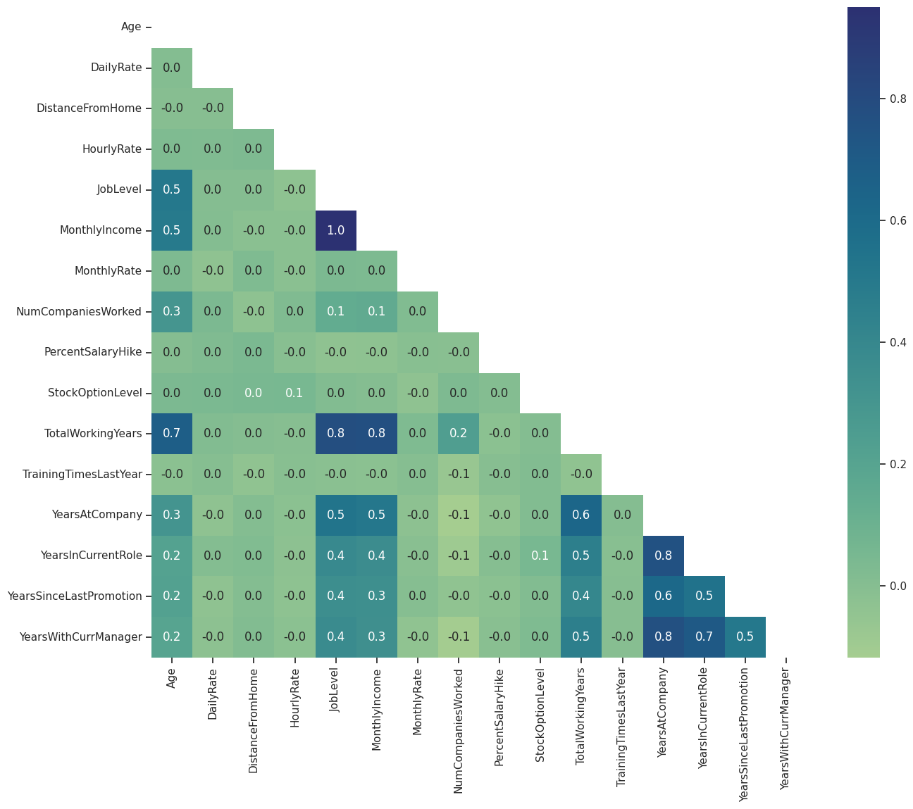
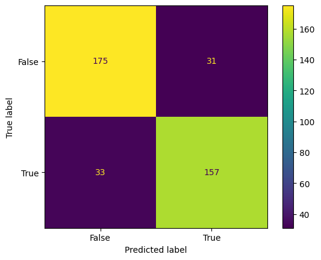
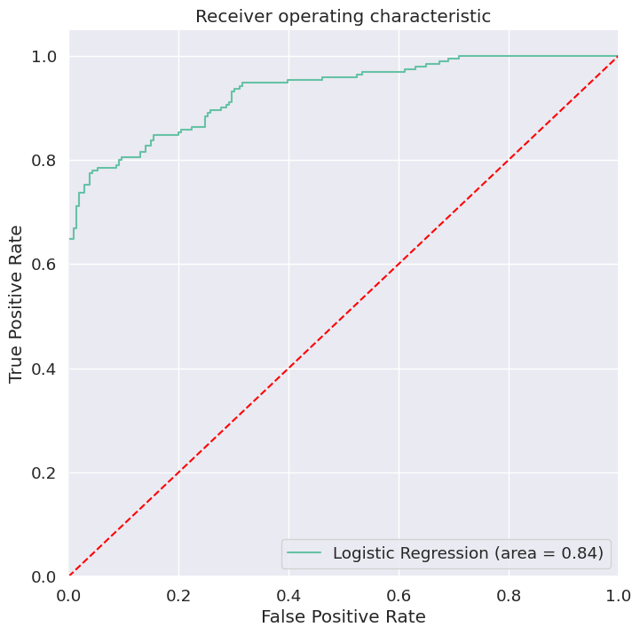

<!DOCTYPE HTML>
<!--
	Phantom by HTML5 UP
	html5up.net | @ajlkn
	Free for personal and commercial use under the CCA 3.0 license (html5up.net/license)
-->
<html>
	<head>
		<!-- Google tag (gtag.js) -->
		<script async src="https://www.googletagmanager.com/gtag/js?id=G-B1EM84R79C"></script>
		<script>
			window.dataLayer = window.dataLayer || [];
			function gtag(){dataLayer.push(arguments);}
			gtag('js', new Date());

			gtag('config', 'G-B1EM84R79C');
		</script>
		<link href="images/favicon.ico" rel="shortcut icon"/>
		<title>ML Project | IBM HR Analytics Employee Attrition</title>
		<meta charset="utf-8" />
		<meta name="viewport" content="width=device-width, initial-scale=1, user-scalable=no" />
		<link rel="stylesheet" href="assets/css/main.css" />
	</head>
	
	<body class="is-preload">
	
	<!-- Header -->
		<header id="header">
			<div class="inner">
				<a href="index.html" class="image avatar"></a>
				<h1><strong>YI-TING HSUEH</strong></h1>
				<p>SQL, Python, R<br />
					AI｜ML｜Data Science & Visualization｜Database<br />
					Industrial Engineering｜Cognitive Psychology<br />
					Statistics｜Neuroimaging</p>
			</div>
		</header>


			
		<!-- Main -->
			<div id="main">
				<div class="inner">
					<h1>IBM HR 員工離職數據分析 with a 84% 準確率的 ML 模型</h1>
						<span class="image fit"></span>
						<p></p>
						<p>程式語言跟平台: Python, Google Colaboratory<br />
							數據來源: <a href="https://www.kaggle.com/datasets/pavansubhasht/ibm-hr-analytics-attrition-dataset/data">IBM HR Analytics Employee Attrition & Performance</a><br />
							Medium 文章: <a href="https://medium.com/@ayt.hsueh/ibm-hr-員工離職數據分析-with-a-84-準確率的-ml-模型-0d0cdb2732f9">ML Project (1)- IBM HR 員工離職數據分析 with a 84% 準確率的 ML 模型</a>
							</p>
					
				<!-- One -->
					<section id="one">
					<hr>
						<header class="major">
							<h2>介紹</h2>
						</header>
						<div>
						<h3>分析目標與問題</h3>
						<ol><li>找出員工流失的因素，為公司保留人才，或是減少因員工離職產生的相關成本。</li>
								<li>根據每位員工的數據，預測員工離職的可能性，讓公司提早做好應對措施。</li></ol>
							</div>

							<div>
						<h3>分析方式與預期結果</h3>	
						<ol><li>描述性分析 (Descriptive Analysis / EDA)</li>
								<li>ML 模型 - Binary Logistic Regression Model 預測員工的離職與否</li></ol>
							</div>

							<div>
						<h3>這個數據集</h3>	
						<ul><li>No missing value, no duplicated entries</li>
								<li>1470 名員工，離職率高達 <strong>16.1%</strong></li>
								<li>應變數為 Attrition</li>
								<li>預測變數有 30 個，其中 14 個為類別變項， 16 個為數值變項。</li>
								<li>因未能提供有用的資訊所以不會再進一步分析的變項有 4 個: EmployeeCount, EmployeeNumber, StandardHours, Over18</li></ul>
							</div>
					</section>

				<!-- Two -->
					<section id="two">
					<hr>
						<header class="major">
							<h2>Pipeline</h2>
						</header>
						<p>
							<ul>
								<li>Data Exploring, Data Cleaning</li>
								<li>Descriptive Analysis<br />
									&#20; Visualization with histograms</li>
								<li>Numeric Variables Scaled<br />
									&#20; Standardization</li>
								<li>Categorical Encoding<br />
									&#20; Dummy encoding with first levels/dummies dropped</li>
								<li>Compare models among imbalanced data handling algorithms<br />
									&#20; Over-sampling vs. Under-sampling vs. without any algorithms</li>
								<li>Feature Selection<br />
									&#20; Recursive Feature Elimination (RFE)</li>
								<li>Model Fitting<br />
								<li>Model Evaluation<br />
									&#20; Confusion Matrix & ROC Curve</li>
							</ul>
						</p>
					</section>

				<!-- Three -->
					<section id="three">
					<hr>
						<header class="major">
							<h2>建模以前的資料前處理，以及描述統計</h2>
						</header>
						<p>在數值型資料的部分，針對每一個變數我主要做了直方圖看其分布，以及離職率在各個區間的佔比。<br />
							為了避免版面雜亂，這邊先放一張表示相關性的熱圖</p>
							<span class="image fit"></span>
						<p>在類別型資料的部分，我亦針對每一個變數做條狀圖，看每一個level的人數與離職率是否有明顯差異。</p>
					</section>

				<!-- Four -->			
					<section id="four">
						<hr>
						<header class="major">
							<h2>模型比較</h2>
						</header>
						<p>
							我比較了幾個 Binary Logistic Regression Models 模型後，採用的模型中，數值特徵皆做平均數變異數標準化，類別特徵做 dummy encoding ，使用 SMOTE 處理目標類別分佈不均衡的問題，最後用 Recursive Feature Elimination (RFE) 演算法選擇重要的特徵。<br />
							作為對比，如果沒有處理資料不均衡，模型準確率也高達 87% ，但正確預測「離職員工」的敏感度僅有 50% 😢<br />
							<ul>
								<li>Number of training data after oversampling:  1976</li>
								<li>39 個顯著影響離職與否的特徵</li>
								<li>模型正確性達 83.8%</li>
								<li>根據分類報告，此模型成功預測未離職的人「沒有離職」的機率為 0.85 ，模型在分類離職的人為「離職」的敏感度提升至 0.83 。模型預測為「沒有離職」的人中有 84% 的人真的為「沒有離職」，模型預測為「離職」的人中有 84% 的人真的已經「離職」了。</li>
								<li>總體來說，是一個 good model!</li>
							</ul>
						</p>
					</section>
						
				<!-- Five -->		
					<section id="five">
					<hr>
						<header class="major">
							<h2>分類模型評估</h2>
						</header>
						<div>
							<h3>Confusion Matrix</h3>
							<span class="image fit"></span>
						<p>
						</div>

						<div>
							<h3>ROC Curve</h3>
							<span class="image fit"></span>
						</div>
					</section>

				<!-- Six -->		
					<section id="six">
					<hr>
						<header class="major">
							<h2>限制與建議方向 (limitations & future directions)</h2>
						</header>
						<p>影響公司員工決定要不要離職的其他可能重要因素(i.e., 特徵)包括 (1) 沒有主動離職 (voluntary separation) vs.被動離職 (involuntary layoffs) 的數據、 (2) 無法量化的因素，如，企業文化、 (3) 沒有趨勢（time series）的資料。</p>
						<p>在資料處理上可以改進的方向包括 (1) 數值特徵跟類別特徵的處理應該要根據分佈或特性等做更細緻的轉換。 (2) 特徵的選擇在跑 RFE 演算法的時候，亦須仰賴領域專業知識協助特徵的選擇，建好的 ML 模型才有實務上的意義。 (3) 沒有檢查離群值。</p>
						<p>在解釋模型需要注意的地方:  (1) ML 模型以及 EDA 的結果只能使用在該公司的員工在離職與否的預測，或是可能潛在因素的解釋。無法應用在其他公司。 (2) 模型準確率越高當然是越好，但是要注意這個高準確度可能是「虛假的」，例如過度擬合 overfitting 的問題。</p>
						<p>其他需要注意的地方:  (1) 類別型資料不能直接跑相關性分析。 (2) 在對類別型資料做 dummy encoding 時，要記得捨棄第一個 dummy/level (作為 baseline)，以避免發生完全的多重共線性。 (3) 使用 Python 跑 RFE 時，要注意類別特徵是不是只有部分 dummy/level 被捨棄。</p>
					</section>

				<!-- Seven -->
					<section id="seven">
					<hr>
						<header class="major">
							<h2></h2>
						</header>
						<p></p>
					</section>
							
				</div>
			</div>


			

		<!-- Footer -->
			<footer id="footer">
				<div class="inner">
					<ul class="icons">
						<li><a href="https://twitter.com/yiting_hsueh" class="icon brands fa-twitter"><span class="label">Twitter</span></a></li>
						<li><a href="https://github.com/aythsueh" class="icon brands fa-github"><span class="label">Github</span></a></li>
						<li><a href="mailto: a0937247174@gmail.com" class="icon solid fa-envelope"><span class="label">Email</span></a></li>
					</ul>
					<ul class="copyright">
						<li>&copy; 2023 薛依婷</li><li>Design: <a href="http://html5up.net">HTML5 UP</a></li>
					</ul>
				</div>
			</footer>


		<!-- Scripts -->
			<script src="assets/js/jquery.min.js"></script>
			<script src="assets/js/jquery.poptrox.min.js"></script>
			<script src="assets/js/browser.min.js"></script>
			<script src="assets/js/breakpoints.min.js"></script>
			<script src="assets/js/util.js"></script>
			<script src="assets/js/main.js"></script>

	</body>
</html>